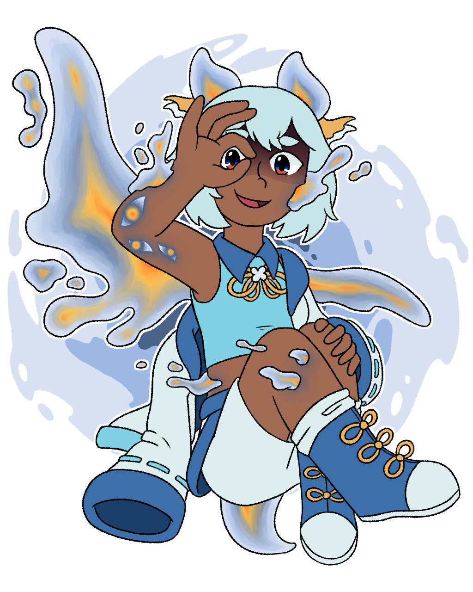
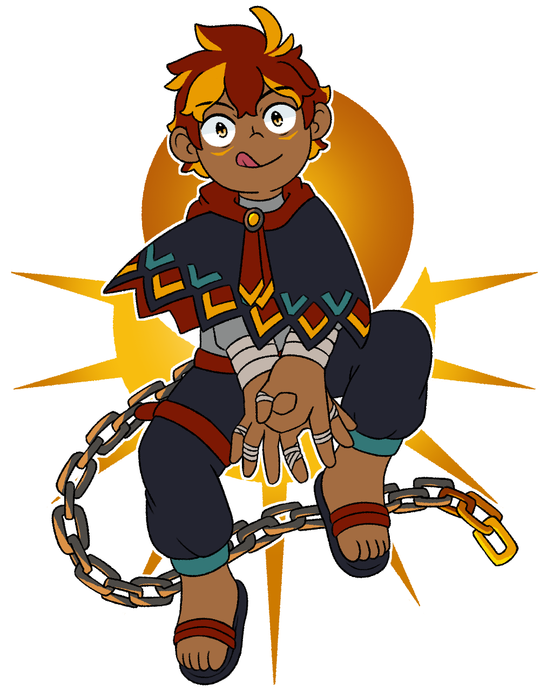
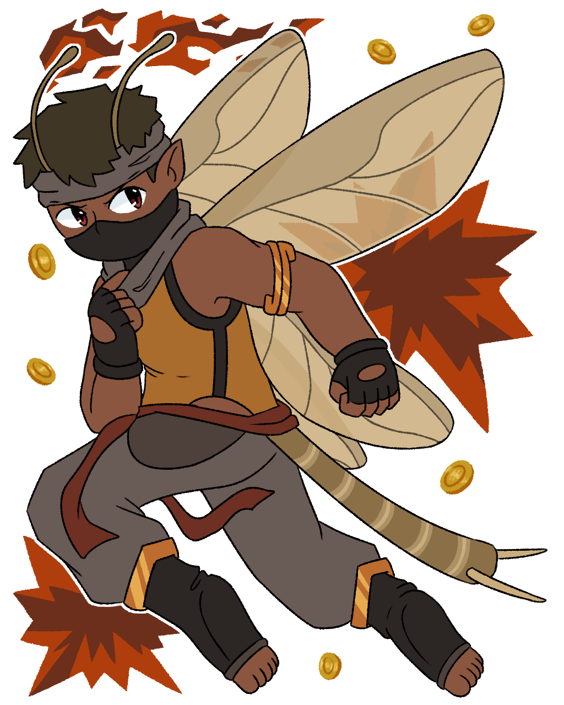
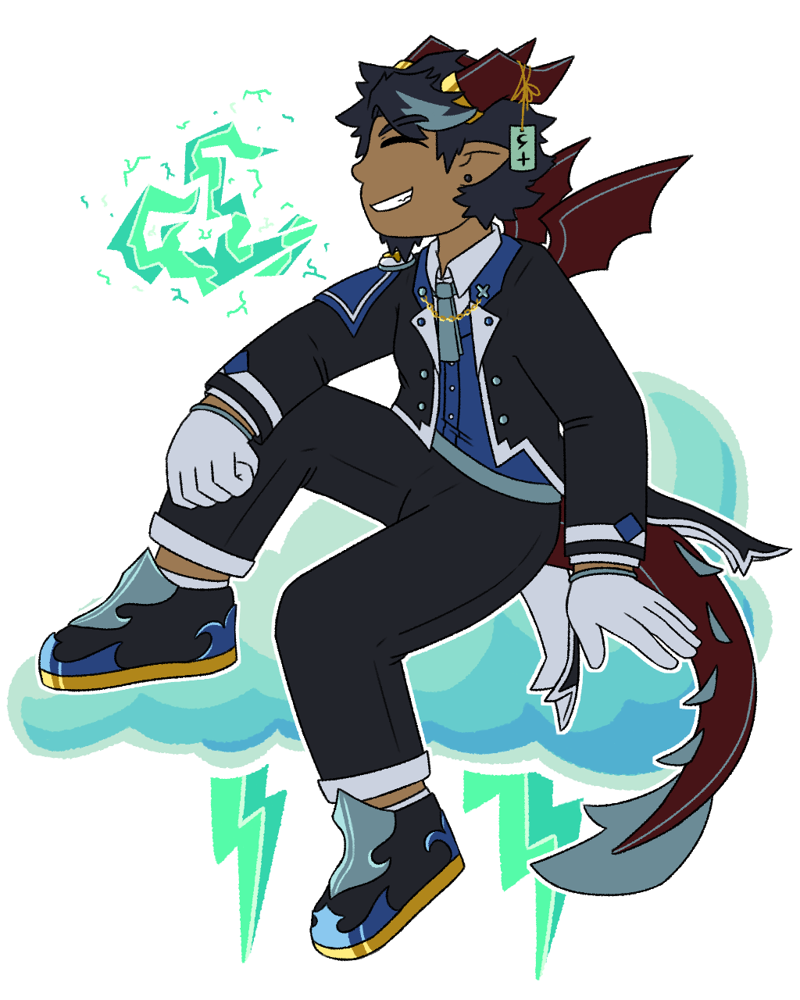

- Four-Philosphy Ensemble: Saffron is the Cynic, Raiden is the Optimist, Araceli is the Realist, and Cole is the Apathetic
-
The Team:
- The Heart: Raiden, specifically in the Magnetic Hero way
- The Leader: Araceli, defined by her determination
- The Smart Guy: Saffron, to everyone else's detriment
- The Big Guy: Cole, though sometimes she'll also play into The Strategist role due to her secret fear of her crew getting hurt
- True Companions: There's a little bit of friction at first, but the main four characters grow to trust each other deeply and even hold together after one is revealed to be a traitor.
Characters / Bolt from the Blue
Character tropes page for the cast of Bolt from the Blue.
Show all spoilers / Hide all spoilers
open/close all folders
Protagonists
As a whole
Raiden

"I know you're hurt, I really do! But, I want to ask you to trust in me - just this once, let my heart reach you!"
A mysterious girl who washed up on the shores of Buragee just over ten years before the attack on Castle Cieliso, and the Protagonist of Bolt from the Blue. Devoid of any memories of her past, she serves as Araceli's personal attendant, happily satisfying all of the curious princess' whims. Optimistic and friendly, Raiden is always open to lending a helping hand to anyone in need, believing wholeheartedly in the strength of being kind.
- All-Loving Hero: Raiden has a lot of patience with others and a great capacity to forgive. She is willing to go out of her way to help others, even complete strangers
- Back from the Dead: Died after falling into an abyss, but was brought back with the power of the Beastlord of Light
- Book Dumb: Though Castle Cieliso has graciously given her a basic education, she's clearly outsmarted by most other characters in the story
- Chronic Hero Syndrome: Her overbearing kindness drives her to right every wrong she happens to stumble upon in her journey through Luxos
- Easily Impressed: Blown away by just about everything new that she sees (which is... everything, technically)
- The Fool: Without her memories, Raiden seems pretty naive and aimless. For most of the story, her entire reason for sticking around is because she swore to never leave Araceli's side.
- Healer Signs On Early: The first character the player gets to use in battle, and she comes with a basic single-target healing skill.
- Heroic BSOD: Particularly when Raiden learns that she is the fifth Beastlord, and that's why Nox Noctis is targeting her. It troubles her quite deeply, but she gets over it.
- Identity Amnesia: This is slightly downplayed in the beginning half of the story as after ten years in San Ven, she's organically developed a new sense of identity. This actually becomes a greater plot point when Ilia gets involved.
- Lady and Knight: The knight to Araceli's lady. Raiden technically isn't enlisted in the Windknights, but she swears to serve Araceli in a similar fashion (though Araceli herself doesn't seem to need that kind of protection). As an attendant, Raiden's role is actually more general than bodyguarding.
- Magnetic Hero: Her ability to connect with others is her trick to overcoming every obstacle.
- Nice Guy: She's literally the nicest character in Bolt from the Blue.
- Only One Name: Doesn't have a last name.
- Past-Life Memories: Starting with zero memories, Raiden regains a small trace of her past at the end of each chapter in the game.
- Person of Mass Destruction: She's a Beastlord, an entity well-established with the power to create and destroy realms.
- Shock and Awe: Raiden has a lightning aspect. As it turns out, however, the lightning aspect was just a residual piece of Raiden before reincarnation. Raiden is actually the formerly-dormant Beastlord of Light, a powerful being with the ability to command the very life and magic on Luxos.
- Steven Ulysses Perhero: The name "Raiden" means god of lightning.
- Stock Shōnen Hero: A pretty snug fit for this trope. Raiden is kindhearted, simple-minded, and has a unique and powerful ability. Her entire philosphy is rooted in The Power of Friendship, has a Shonen Hair style, and is hopelessly Oblivious to Love.
- Victor Gains Loser's Powers: Heartbolt, an ability which triggers at certain parts in the story, such as after certain character subquests. It has some narrative significance as the action of embracing and taking in some of a Luxic person's light, but in-game it gives Raiden a new combat skill based on whichever character she used the ability on.
- Warrior Therapist: Justified thanks to Heartbolt, a power that allows her to personally understand her opponent's passions, values and fears.
- The Watson: Conveniently has very little sense of how the world of Luxos operates or what societies lie within it. The other three party members take their own respective roles in explaining it all to her.
- You Wake Up on a Beach: Her earliest memory is washing up on the shores of Buragee
Araceli Fuentes de Luna

"Should you challenge my resolve, know that it is unbending! I'll show you the true might of the Kingdom of Winds!"
The Deuteragonist of Bolt from the Blue, Araceli is a princess who embraces her position as the heir to the Cielicano throne. Despite her ambitions and successes, a particular failure shines above all the rest - she cannot control her moon aspect. Fated to be the savior against a dark force, Araceli deeply laments her lack of magical ability. When the prophesized dark force threatens her home, she is left with no choice but to flee with her attendant. Araceli hopes to return with the power to take back her kingdom.
- Character Tics: Bites her thumb or knuckle when anxious or lost in thought.
- The Chosen One: Subverted. As fated by a reading at House Infiaco's Night of the Stars, Araceli was to be the key to stopping a ruinous attack on Castle Cieliso. Unfortunately, she could not unlock the ability to overcome the opposing force, leading to the downfall of her kingdom. Double Subverted when she does return to Cieliso at the game's climax and faces the assailants head-on.
- Closet Key: Read a lot of heterosexual YA novels growing up, but would project Raiden onto the male love interest, leading to the realization that she is a lesbian.
- The Confidant: She is the first person who Cole confides to about what happened to The Four Skulls and her guilt regarding the matter. However, Cole carefully omits her affiliation with Nox Noctis...
- Fallen Princess: The perfect heir, aside from her inability to wield her own aspect. This results in the attack on her home kingdom succeeding.
- Foil: To Saffron. Both are of high status and their respective families hold some degree of doubts towards them regarding succession. However, Araceli was going to inherit Cieliso anyway, until the sudden attack caused her to flee. On the other hand, Saffron is not the intended heir, and is actually bitter of Araceli's privileged position.
- My Greatest Failure: Failing to fulfill a prophecy to save San Ven from ruin, even though it's literally not her fault.
- Lady and Knight: The lady to Raiden's knight. Raiden's role is less of a protective knight and more of a personal escort/servant, but Araceli seems to appreciate that plenty.
- The Leader: Of the headstrong flavor. Araceli's determination to grow strong and return home (combined with Raiden's Chronic Hero Syndrome, for better or worse) is what gets the main party swept into all kinds of adventures and errands. This is further reinforced with the "final" chapter of the game beginning with a return to Cieliso.
- Like Father, Like Daughter: Araceli valuing the fate of her kingdom to a deep, martyr-like level comes directly from her dad's influence and guidance.
- Lunacy: Araceli has a moon aspect.
- Power Incontinence: Inverted. She cannot use her moon aspect on her own, depending on the Aurous Saber for menial casting.
- Pretty Princess Powerhouse: Extremely adept at swordfighting, even against multiple opponents at once. She also has better offensive stats than her attendant, Raiden.
- Royal Blood: Cielicano Royal Family.
- Royal Rapier: Aurous Saber.
- Royalty Superpower: The legendary power fated to stop the attack on Castle Cieliso, known as "The Windborne Moon," is only ever granted to members of the Cieliso royal bloodline thanks to a pact with the Champion of Twilight forged long before Araceli's time.
- She Is Not My Girlfriend: Extremely unsubtle about her feelings for Raiden. When called out by other characters, she grows flustered and denies all accusation.
- World's Most Beautiful Woman: A small running gag in Bolt from the Blue, as many characters are implied or explicitly shown to have (or have had) a crush on her.
Saffron Infiaco

"Excuse me as I question your judgement for a moment - just WHAT were you thinking?! Do you have even a touch of logical reasoning in you? No, of course you don't! Why do I even ask..."
The second-born son of South Pyrus' House Infiaco, Saffron is a scholarly noble who believes that he should inherit the House instead of his older brother, looking for every reason to present to his family. Sent to Castle Cieliso to go over some embassy paperwork and meet with its princess, Araceli, his seemingly mundane afternoon is suddenly crushed by an attack by a vicious entity. Alongside Araceli and her attendant, Raiden, Saffron is thrown into an adventure - one that he realizes is just what he needs to prove himself back home.
- The Ace: Saffron is renown as an exceptionally powerful fire aspect wielder in Pyrus, contrasting Araceli's reputation.
- The Baby of the Bunch: Downplayed. Saffron is the youngest of the main four. He's occasionally teased about this by the oldest of the group, Cole, despite only being a couple years younger.
- Break the Haughty: Gets knocked down a peg in Pyrus Chapter when Karma Selvatilla effortlessly shows him the true might of a Head of a noble house.
- Casanova Wannabe: Defied. He was really only this way with Araceli and stops when she discloses that she is a lesbian. Actually, after this point, he starts hating Casanovas himself, notably Raymond, Cole, and - to some extent - Bijou (though he's more of a Wannabe).
- Drama Prince: Played for laughs. He's just a spoiled noble who's way out of touch with reality.
- Fire is Red: Subverted. The Infiaco family's fire aspect wielders channel golden flames.
- Foil: To Araceli. Both are of high status and their respective families hold some degree of doubts towards them regarding succession. However, Araceli was going to inherit Cieliso anyway, until the sudden attack caused her to flee. On the other hand, Saffron is not the intended heir, and is actually bitter of Araceli's privileged position.
- Inferiority Superiority Complex: He's not quiet about his accolades and abilities in the slightest. Unfortunately, the whole "inheriting the noble house" thing is a sore spot for him, and he's secretly afraid that this whole journey to prove himself will just end in utter embarrassment.
- Insufferable Genius: A brilliant scholar with great theoretical knowledge on how people work... Emphasis on theoretical.
- My Name is Inigo Montoya: In several confrontations, most notably (and ironically, since they are established to already know each other) Karma, he introduces himself as "Saffron Infiaco, second-born son of House Infiaco."
- Lethal Chef: Very much cannot cook due to a lack of kitchen sense. Even if he's preparing meals with someone who can cook (like Cole), he will very strongly insist on adding bizarre ingredients and seasonings to "improve taste"
- Playing with Fire: Saffron has a fire aspect.
- Sheltered Aristocrat: Painfully out of touch with lifestyles outside that of himself and other nobles.
- Royal Blood: House Infiaco.
- Royalty Superpower: Each noble house of Pyrus has a special power inherited by its members: for House Infiaco, this power is future sight. The potency at which members of the bloodline can use this ability varies - Saffron unfortunately is on the less impressive end of this spectrum, only able to vaguely perceive events within the next day.
- Squishy Wizard: Saffron the highest INT stat and cael limit out of the main party and a versatile array of skills, but he's lacking in pretty much every other department when it comes to combat.
- Successful Sibling Syndrome: Saffron's older brother, Raymond, is extremely well-liked by others. Raymond also has an exceptional cael limit and natural talent for magic, rivaling and occasionally eclipsing that of Saffron. It's clear that Raymond would make a suitable Head, except he wouldn't...
- What Does She See In Her?: Saffron is confused by Araceli's affections for Raiden, seeing the latter as rather unremarkable.
Cole Fulrisk

"Sometimes, it's not enough to just want something. Sometimes, you gotta take it with your bare fists and show the world you earned it!"
Formerly first mate of the infamous sky pirates crew, The Four Skulls, Cole leaves her powerful position after a dark tragedy and resides alone in her own skycraft. After solo pirating for a few years, she finds some stowaways on the run from an attack on the nearby castle. Intially, Cole only intended to bring them back home and be on her way, but she has secretly grown fond of the idea of a new crew, amusedly tagging along with their antics.
- An Ice Person: Cole has an ice aspect.
- The Big Guy: The most physically strong of the main party. This shows in her stats too, as she has the highest defense and second highest strength stats.
- Butch Lesbian: Dresses and acts notably masculine, and even goes by a masculine nickname (Colwyn to Cole).
- The Casanova: Apparently has quite a way with women, recounting various tales to the party's amusement (or distaste).
- Dark and Troubled Past: Ever since the loss of her captain and departure from The Four Skulls, Cole has closed her emotions off to others, presenting herself as nothing but a tough as nails ladykiller.
- Heel-Face Revolving Door: Initially a bit of a delinquent (but not necessarily evil), then shifts into a truly heroic person who cherishes the main party, but eventually her true motive to aid Nox Noctis with their greater plan, but eventually comes back around again for good after realizing how much she gained from being with the other three.
- Hidden Heart of Gold: Insists that she's only chauffeuring the party around as a favor and because she's got nothing better to do, but deep down she enjoys being a part of a "crew" again.
- Inflationary Dialogue: A short bit between Cole and Saffron. Cole refers to her ship as "The Frostfarer 3000 Supreme," and when Saffron comments on the obnoxious nature of the title, she corrects herself, referring to it instead as "The Frostfarer 3001 Supreme."
- I Work Alone: After leaving The Four Skulls, but prior to meeting the rest of the party, Cole continued pirate activity under a solo title. Notoriety of her solo work spread quickly, earning her a reputation of a cold-hearted loner.
- Lovable Rogue: Commits petty crimes around San Ven and the Skysea Port, but her tough/cool nature and sense of humor earns her enough charm to get by.
- Nominal Villain: Not necessarily a bad person at heart, but works for Nox Noctis in exchange for information about her lost ex-captain
- Only Known by Their Nickname: Nobody in the story calls her by her birth name, Colwyn.
- Regretful Traitor: Turns out to be a lackey for Nox Noctis, simply completing the task of bringing Raiden into their hands. At the beginning of this story, going forward with this doesn't bother her in the slightest, having closed herself off from emotions and intimacy. However, after going on an entire adventure with the group, she grows increasingly guilty about the whole thing, leading to her ultimate Heel-Face Turn
- Rugged Scars: Has a couple prominent scars across her left cheek.
- Sky Pirate: She's a pirate and she has a skycraft.
- Sugar and Ice Personality: Cole typically sticks to herself, presenting as an aloof loner. However, depsite still trying to maintain this reputation, she is awfully caring and warmhearted towards Raiden, Araceli and Saffron.
- Team Chef: Having grown up in Sinocrast, a culinary paradise, Cole naturally picked up a knack or two for cooking. She prepares most of the meals for the party, but occasionally one of the other three offer to substitute in for a night.
- Tragic Ice Character: Wrought with coldness and tragedy, Cole ice-olates hardcore and secretly hates that lifestyle. She even has Icy Blue Eyes.
Nox Noctis
As a whole
- Affably Evil: Some members of Nox Noctis are actually quite reasonable and even pleasant to be around, namely Vesper and Kanten.
- Criminal Found Family: Nox Noctis is composed of outcasts and people with dark ambitions or a nefarious reptuation. Despite how they may interact with one another, they have a surprisingly deep bond, going great lengths to protect each other.
- Heel-Face Turn: By the end of the story, most of Nox Noctis has been won over by Raiden
- Sliding Scale of Antagonist Vileness: A bit of a jarring variety. Just to name a few: Vesper is Driven to Villainy due to desperate circumstances, Declan acts ruthlessly on an unshakeable quest for revenge, Karma is a textbook Fair-Play Villain, and of course Cole, Nox Noctis' own Wild Card
- They Look Just Like Everyone Else!: Despite being the story's greatest villains, many of Nox Noctis' members look pretty normal compared to everyone else. It helps that they don't have an edgy unifying article of clothing to denote their status
Ilia Miron

"Deep Umisuu is a pretty dangerous area, so stay close, maybe hold on tight - I hope you enjoy the ride!"
Ilia was once a seemingly well-intentioned ally who revealed herself to be one of Nox Noctis' members. Her mission with Nox Noctis is to seize the Beastlord of Tide for purposes unknown to the party, but her true intentions are far more selfish.
- Becoming the Mask: Ilia only befriended the protagonists to betray them later. In the moment when she could finally see her plans through, she hesitates, Raiden's words from their past interactions somehow resonating with her.
- Dangerous Forbidden Technique: Ilia's power to absorb the light of monsters is one manufactured by Lance. It pointedly similar to the Champions' ability to receive light from Luxic people. If she stops absorbing monsters, she will die from her own toxin aspect, just as Champions risk fading from existence if they don't receive enough light offerings. However, the more monsters she absorbs, the more unstable her own form, as this is not a power intended for Luxic people.
- Family Theme Naming: Iliana and her sister Ophelia.
- The Gadfly: When her intuition leads her to correctly assume Araceli's feelings for Raiden, Ilia begins to actively flirt with Raiden just because it kept her entertained.
- In-Series Nickname: Her name is actually Iliana (and some people, such as her sister, still refer to her as such), but she's generally known as Ilia.
- Mana Drain: Inverted because of how cael works. In battle, Ilia can transfer some of her cael to the last person she attacked.
- Mind Control: An interesting result when Ilia uses her toxin aspect to poison Raiden. Because of Raiden's Luxic consciousness, what would normally be a straightforward absorption instead manifests as warping her desires.
- Poisonous Person: Ilia has a toxin aspect.
- Sealed Evil in a Can: Ilia literally seals the corrupted light of powerful monsters inside of her to call upon in combat. Apparently, she was going to do this to Raiden.
- Summon Magic: Ilia has the ability to call upon corrupted versions of monsters that she's absorbed the light of.
- A Wolf in Sheep's Clothing: Joins the party early in the story and reveals herself to have just been using them soon after, mainly as a means to get close to Raiden and poison her.
Karma Selvatilla

"Aw, come on, Vesper! Just one more fight - I promise I'll set better conditions this time!"
The eccentric Head of House Selvatilla - and, strangely, its only living member. Karma has a great interest in combat, especially one-on-one, and would compromise pretty much anything else (including Nox Noctis missions) in order to participate in a fun fight. The reason for this unusual behavior is unknown.
- Blood Knight: Obsessed with fighting, and is shown to compromise missions with Nox Noctis just for a fun brawl.
- Blue-and-Orange Morality: Karma's moral framework is built entirely on what she thinks is most fun or exciting - usually involving battles in some way.
- Facial Markings: Karma possesses two golden chevron-like markings under each eye, a symbol of the Head of House Selvatilla.
- Fair-Play Villain: Despite having the ability to swiftly wipe out the party, Karma does not initiate battle until a "contract" is made with handicaps against both sides - literally just for the fun of it.
- Fragile Speedster: Has the highest AGI stat in Nox Noctis, and one of the lowest DEF stats.
- Life Drain: Performing an action that breaches Karma's contract results in the character's health getting drained.
- Maniac Tongue: Often depicted with her tongue poking out playfully.
- The Power of the Sun: Karma has a sun aspect.
- Speed Blitz: Unless the player convinces Karma to not use Solspeed during the contracted battle, Karma will outspeed every character AND attack twice per turn.
- Vitriolic Best Buds: With Vesper. Karma's constantly bugging her about fights and has compromised missions as a result, and Vesper returns with loud irritation. Vesper also sees Karma as lacking perspective. They still voluntarily work together, however, and are more loyal to each other than to Nox Noctis as a whole.
Vesper Naagi

"Like you'd know what it's like to struggle! Pcheh!..."
Captain of the pirate crew known as Serpens and a key member of Nox Noctis, Vesper is a shockingly good leader when given the opportunity. Unfortunately, she has quite a sour attitude, particularly towards those who she deems "blessed."
- The Faceless: She wears a Cool Mask to cover the lower half of her face. The mask hides a caelism blight across her chin and neck.
- Foil: To Cole. Both are ill-mannered members (ex-member in Cole's case) of a pirate crew who secretly care deeply about their allies, and they both suffer from untreated caelism. These similarities are acknowledged, but Vesper sees Cole as a "blessed" version of herself. This is somewhat justified, as Cole did grow up in a more fortunate position than Vesper.
- Fragile Speedster: As a thief, she has a high AGI stat (though not as high as Karma's) and a low DEF stat (though not as low as Karma's).
- Had to Be Sharp: Grew up in the Kesip Desert without a family or any friends. In order to survive on her own, Vesper trained her rather mediocre fire aspect into something that could command respect.
- Playing with Fire: Vesper has a fire aspect.
- Smarter Than They Look: Seems like nothing but a rude delinquent, but is extremely analytical and can keep track of multiple pawns on the battlefield with little sweat.
- The Strategist: Vesper's ability to devise intricate plans that take each Nox Noctis member's individual powers into account lends into this role.
- Took a Level in Cynic: Once an idealist who believed in unifying the Kesip Desert and forging an identity outside of the Guashan-Pyrus conflict. Of course, some individuals within her movement turned against her, and now she's closed herself off to play the role of a ruthless pirate captain.
- Video Game Stealing: Vesper can steal health points from the party. She can also steal cael from her allies to give them better magical flexibility in combat.
- Vitriolic Best Buds: With Karma. Karma's constantly bugging her about fights and has compromised missions as a result, and Vesper returns with loud irritation. Vesper also sees Karma as lacking perspective. They still voluntarily work together, however, and are more loyal to each other than to Nox Noctis as a whole.
Kanten

"My breadth in services may surprise you. If there's a will, there's a pay~"
An opportunistic mercenary who values money above all else. Once a renown assassin who accepted jobs from the elite, Kanten has since settled into a sort of "bodyguard" position for Coco, a clearly self-sufficient and capable young woman. She says that her reasons for taking such a long-term job are entirely rooted in the profit, though her client hints otherwise...
- Blow You Away: Kanten has a wind aspect.
- Bodyguard Crush: Currently hired as Coco's escort and bodyguard. Coco's feelings for Kanten are very obvious.
- Bodyguarding a Badass: Kanten's current client, Coco, is perfectly capable of handling herself, but prefers leaning on Kanten because it's convenient and "romantic."
- Enigmatic Minion: Clearly aligned with Nox Noctis, but doesn't particularly care for its goals or methods. Though it's clear she's only aligned with them as a commissioned mercenary, she seems to have some secret motivations underneath.
- Every Scar Has a Story: The one on her right eyelid came from a particularly nasty client from Kanten's past.
- Eyes Always Shut: Kanten's eyes are almost always closed, only open when she is using Whirlwind.
- Only in It for the Money: A very picky mercenary who only takes jobs she deems "worth their price." She actually stops pursuing Raiden on behalf of Nox Noctis because she's determined that the effort has begun to outweigh the payment.
- Professional Killer: Her main gig as a mercenary.